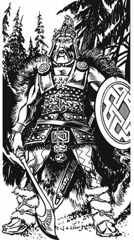

野蛮人 · Barbarian
野蛮人是战士的子职业，擅长在险恶荒野中生存所需的众多技能：快速移动、攀爬、多种武器、某些“第六感”，以及多项次要与第三类能力。他们强韧耐久，受伤后恢复迅速。野蛮人角色的力量与体质均至少为 15，敏捷至少为 14，感知不得高于 16。野蛮人没有首要属性，因此没有所得经验值加成；玩家角色野蛮人不能兼任两个职业。
野蛮人的敏捷每高于 14 一点，防护等级便改善 2 级，但仅在没有穿着相当笨重的护甲时适用；若穿着相当笨重或笨重的护甲，则每点只改善 1 级。这取代其他职业的敏捷防御调整值；敏捷的反应与攻击调整值仍照常适用。此外，体质每高于 14 一点，野蛮人得到 +2 生命值，取代其他职业通常的体质加值。
野蛮人必须是人类，可取任何非守序阵营。他们不使用任何阵营语言；起初只会说自己的部落语言和通用语。若希望识字，必须另行学习；也可按智力像其他角色一样学习语言。
野蛮人使用 d12 生命骰，基础移动率为 15 英寸，沿用普通战士的战斗表。他们可使用任何武器、盾牌与护甲，但相当笨重或笨重的护甲会削弱其敏捷防护等级加值。初始武器中必须包括手斧、匕首和矛；地下城主可按家乡文化另选其他武器。
野蛮人（战士）表 I Barbarians (Fighters) Table I
| 经验值 | 等级 | 累计 d12 生命骰／附加生命值 | 称号 |
|---|---|---|---|
| 0–6,000 | 1 | 1 | 野蛮人 |
| 6,001–12,000 | 2 | 2 | 野蛮人 |
| 12,001–24,000 | 3 | 3 | 野蛮人 |
| 24,001–48,000 | 4 | 4 | 野蛮人 |
| 48,001–80,000 | 5 | 5 | 野蛮人 |
| 80,001–150,000 | 6 | 6 | 野蛮人 |
| 150,001–275,000 | 7 | 7 | 野蛮人 |
| 275,001–500,000 | 8 | 8 | 野蛮人 |
| 500,001–1,000,000 | 9 | 8+4 | 野蛮人 |
| 1,000,001–1,500,000 | 10 | 8+8 | 野蛮人 |
| 1,500,001–2,000,000 | 11 | 8+12 | 野蛮人 |
11 级以上，每增加 500,000 经验值升一级；8 级以后每级增加 4 生命值。

本节内容
上一节：武器专精 · Weapon Specialization
下一节：魔法、武器与豁免 · Magic, Weapons, and Saving Throws